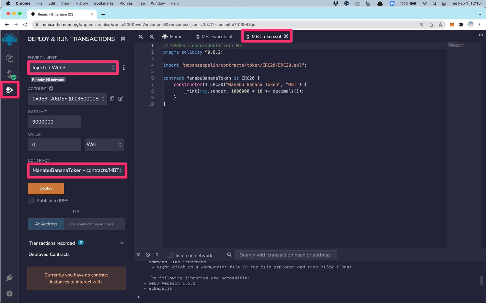
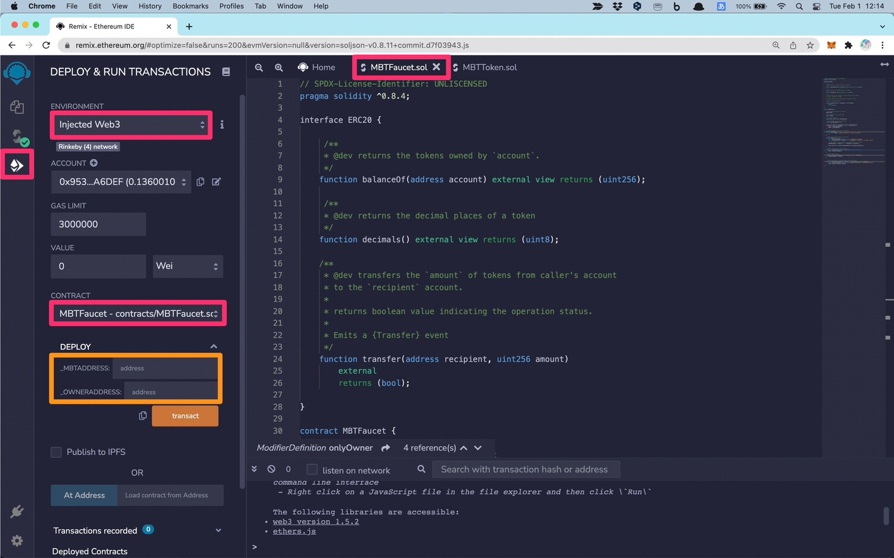
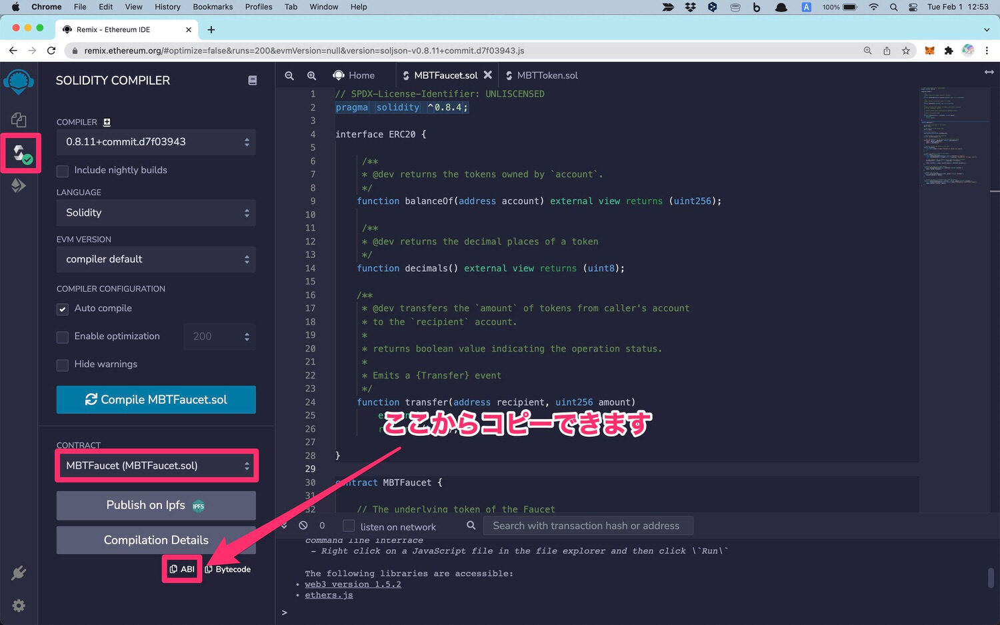

Solidityで「Faucetアプリ」を作る方法【Web3.jsでメタマスクと連携】

こんにちは、yuudaiです。
今回は「Solidityで”Faucetアプリ”を作る方法」を解説します。
アプリ作成で利用する技術
- Solidity：スマートコントラクトの実装
- Web3.js：フロントエンドからスマコンの操作
- Metamask：フロントエンドからトークンの送金
もくじ
- １．Faucet用のスマートコントラクトを作る
- ２．スマートコントラクトを「デプロイ」する
- ３．スマートコントラクトとフロントエンドを繋ぐ
それでは、見ていきましょう。
１．Faucet用のスマートコントラクトを作る
まずは、下記の２つを作成します。
- その①：トークン用のスマートコントラクト
- その②：Faucet用のスマートコントラクト
上記のとおりなので、順番にみていきます。
その①：トークン用のスマートコントラクト
まずは「トークン用のコントラクト」を作ります。
Faucetから「イーサ」を吐き出してもいいのですが、勉強のために「トークン作成」から進めていこうと思います。イーサを吐き出す場合は、トークン用のスマートコントラクトを作らなくてもOKです。
トークン発行用のスマートコントラクト
// SPDX-License-Identifier: MIT
pragma solidity ^0.8.2;
import "@openzeppelin/contracts/token/ERC20/ERC20.sol";
contract ManabuBananaToken is ERC20 {
constructor() ERC20("Manabu Banana Token", "MBT") {
_mint(msg.sender, 1000000 * 10 ** decimals());
}
}上記のとおり。めちゃくちゃシンプルですよね。
今回は「OpenZeppelin」というライブラリを使っているので、たった数行のコードでトークン発行できています。
なお、コードでは「ManabuBananaToken (＝マナブ・バナナ・トークン)」を発行しています。枚数は「百万枚 (=1,000,000)」です。
OpenZeppelinのライブラリの使い方
OpenZeppelinのサイト内に「Contracts Wizard」というページがあります。ここを使うことで、秒速でトークン発行できます。
補足：ライブラリなしでトークン発行する方法
OpenZeppelinは便利ですが、しかし「内部のブラックボックス化」が起こりますよね。要するに「動いたけど、、意味がわからん」という状態です。
ここを防ぐには「Create your own BEP20 tokens」という記事がオススメです。こちらのチュートリアルを学べば、ライブラリなしでトークン発行を学べます。
というわけで、以上が「トークン発行」のパートです。
世の中には大量のトークンが出回っていますが、実はこんなにも簡単に作れる訳ですね。仕組みが分かると、マーケットの見え方も変わると思います。
その②：Faucet用のスマートコントラクト
続いては「Faucet機能を持つスマートコントラクト」を作ります。結論としては、下記コードがスマートコントラクトの全文です。
// SPDX-License-Identifier: UNLISCENSED
pragma solidity ^0.8.4;
interface ERC20 {
/**
* @dev returns the tokens owned by `account`.
*/
function balanceOf(address account) external view returns (uint256);
/**
* @dev returns the decimal places of a token
*/
function decimals() external view returns (uint8);
/**
* @dev transfers the `amount` of tokens from caller's account
* to the `recipient` account.
*
* returns boolean value indicating the operation status.
*
* Emits a {Transfer} event
*/
function transfer(address recipient, uint256 amount)
external
returns (bool);
}
contract MBTFaucet {
// The underlying token of the Faucet
ERC20 token;
// The address of the faucet owner
address owner;
// For rate limiting
mapping(address=>uint256) nextRequestAt;
// No.of tokens to send when requested
uint256 faucetDripAmount = 1;
// Sets the addresses of the Owner and the underlying token
constructor (address _mbtAddress, address _ownerAddress) {
token = ERC20(_mbtAddress);
owner = _ownerAddress;
}
// Verifies whether the caller is the owner
modifier onlyOwner{
require(msg.sender == owner,"FaucetError: Caller not owner");
_;
}
// Sends the amount of token to the caller.
function send() external {
require(token.balanceOf(address(this)) > 1,"FaucetError: Empty");
require(nextRequestAt[msg.sender] < block.timestamp, "FaucetError: Try again later");
// Next request from the address can be made only after 5 minutes
nextRequestAt[msg.sender] = block.timestamp + (5 minutes);
token.transfer(msg.sender,faucetDripAmount * 10**token.decimals());
}
// Updates the underlying token address
function setTokenAddress(address _tokenAddr) external onlyOwner {
token = ERC20(_tokenAddr);
}
// Updates the drip rate
function setFaucetDripAmount(uint256 _amount) external onlyOwner {
faucetDripAmount = _amount;
}
// Allows the owner to withdraw tokens from the contract.
function withdrawTokens(address _receiver, uint256 _amount) external onlyOwner {
require(token.balanceOf(address(this)) >= _amount,"FaucetError: Insufficient funds");
token.transfer(_receiver,_amount);
}
}上記のコードは「How To Deploy a Faucet」の記事を参考にしました。
なお、申し訳ありませんが、この記事でスマートコントラクトの詳しい説明は省きます。詳しい内容は、引用元の記事をご覧ください。
ちなみに、スマートコントラクトの最初に「interface」という記述がありますが、ここの解説は「Interface in Solidity smart contracts」が詳しいです。
そして「contract MBTFaucet {}」の内部に関しては、１つ１つのコードを読んでいけば、全体の流れは理解できるはずです。基本的には「JSの基礎知識」が必須だと思います。
というわけで、以上がスマートコントラクトのパートです。
続いては「スマコンのデプロイ」に進みます。
２．スマートコントラクトを「デプロイ」する
スマコンのデプロイは「Remix – Ethereum IDE」を使います。
- 手順①：トークンをデプロイする
- 手順②：Faucet機能をデプロイする
上記の順番で進めていきます。速攻で完了します。
手順①：トークンをデプロイする
下記の画像のとおりに設定してください。

その後に「Deploy」というオレンジ色のボタンを押すだけです。するとメタマスクが立ち上がり、ブロックチェーンにデプロイできます。以上で完了。
{kind=link}
補足：コントラクトが表示されない場合
上記の画像内の「CONTRACT」の部分に「ManabuBananaToken」といった表示が出てこない場合は、Remixの「オートコンパイル機能」を「オン」にしてください。方法は「こちら」の画像で解説しました。
なお、もっと深くRemixについて学習したい場合は「Solidity Tutorial – A Full Course on Ethereum」の動画が参考になります。動画を見ることで、Solidityの基礎と、Remixの基礎を学べるはずです。
手順②：Faucet機能をデプロイする
トークンと同じです。下記の画像のとおり。

しかし、１つだけ注意点があります。オレンジ色の部分です。
{kind=link}
- _MBTADDRESS：トークンのコントラクトアドレスを記入
- _OWNERADDRESS：トークンオーナーのウォレットアドレスを記入
オレンジ色の部分には、上記のように記入します。先ほどにトークンを発行しているので、すでに「コントラクトアドレス」と「トークンのオーナーのアドレス (＝自分のMetamaskのアドレス)」は把握していますよね。
記入後に「Deployボタン」を押すと、完了します。これにて、スマートコントラクトのデプロイが完了。参考までに、僕のFaucet情報が下記です。
上記を見てみると、実際の履歴が分かるはずです。なお、ネットワークは「Ethereum」の「Rinkebyテストネット」を使っています。
３．スマートコントラクトとフロントエンドを繋ぐ
というわけで、最終パートです。
- 手順①：簡単なHTMLを作る
- 手順②：フロントエンドとスマコンを繋ぐ
上記を進めていきます。楽しいパートです。
手順①：簡単なHTMLを作る
フロントエンドは超シンプルです。
<!DOCTYPE html>
<html>
<head>
<title>Faucet Demo</title>
<script src="https://cdn.jsdelivr.net/npm/web3@latest/dist/web3.min.js"></script>
</head>
<body>
<p>Faucetのデモサイト</p>
<button type=“button” onclick="doFunction();">トークンをゲットする</button>
</body>
</html>これだけです。説明は不要ですよね。
強いていうなら「head」の部分で「web3.js」を読み込んでいます。
こちらのJSを読み込むことで、スマコンを操作することが出来ます。
手順②：フロントエンドとスマコンを繋ぐ
続いては「Web.js」を触っていきます。
ここからの内容は「Interacting with Smart Contracts from Web Apps」という記事を参考にしました。こちらを参考にしつつ、カスタマイズしています。
なお、ここからのスクリプトでは、次の２つを実行しています。
- その(1) メタマスク＆スマコンに接続する
- その(2) スマートコントラクトを実行する
これだけです。まずは完成版のコードを貼っておきます。
// メタマスクに接続する
async function loadWeb3(){
if(window.ethereum) {
window.web3 = new Web3(window.ethereum);
window.ethereum.enable();
}
}
// コントラクトに接続する
async function loadContract(){
return await new window.web3.eth.Contract([ ...省略...
],'【Faucetのコントラクトアドレスを記載する】');
}
// 利用者のメタマスクのウォレットアドレスを取得
async function getCurrentAccount(){
const accounts = await window.web3.eth.getAccounts();
return accounts[0];
}
// ボタンがクリックされたときに、Faucetのコントラクトを実行する
async function doFunction() {
const account = await getCurrentAccount(); // 利用者のメタマスクのウォレットアドレスを取得
const send = await window.contract.methods.send().send({ from: account });
console.log(send);
}
// メタマスクとコントラクトへの接続を実行する機能
async function load(){
await loadWeb3(); // メタマスクに接続する
window.contract = await loadContract(); // コントラクトに接続する
}
load(); // メタマスクとコントラクトへの接続を実行する機能を実行する上記のとおり。なお、コントラクトに接続するファンクションは、部分的に省略しています。完全版のコードは「Github」に公開しておきました。
いくつかのコードについて、下記で深堀りをします。
メタマスクに接続する
async function loadWeb3(){
if(window.ethereum) {
window.web3 = new Web3(window.ethereum);
window.ethereum.enable();
}
}上記にて「メタマスクへの接続」ができます。画面をロードすると、メタマスクのポップアップが出てくる感じですね。なお「async」については「async / awaitの使い方の記事」をどうぞ。
コントラクトに接続する
async function loadContract(){
return await new window.web3.eth.Contract([ ...省略...
],'【Faucetのコントラクトアドレスを記載する】');
}スマコン接続は上記なのですが、ここでは「ABI」を利用します。
ABIとは「Application Binary Interface」のことで、そのまま翻訳すると「２つのアプリケーション用のインターフェイス」です。要するに「２つのアプリ」を繋ぐ訳ですね。今回のケースだと「フロントエンドとスマコン」を繋ぎます。
ABIの取得方法は、下記の画像のとおりです。

赤枠に注意しつつ、コピーしてください。僕は自分で作業するときに、ここで「別のコントラクトのABI」をコピーしてしまい、２時間ほど消耗しました。
{kind=link}
コピーしたABIは、下記の部分に貼り付けます。
return await new window.web3.eth.Contract(【ここに貼り付け】)上記のとおり。これでフロントエンドからスマコンを操作できるようになります。なお、繰り返しですが、完全なコードは「Github」にあります。
スマートコントラクトを実行する
async function doFunction() {
const account = '【利用者のメタマスクのアドレス】';
const send = await window.contract.methods.send().send({ from: account });
}上記でFaucetを実行できます。なお、実際のコードでは「getCurrentAccount()」のファンクションを定義して、自動で利用者のメタマスクアドレスを取得しています。
作成したアプリを実行してみる
というわけで、以上です。最後に、アプリを実行しましょう。
追記（2022年2月5日）：Faucetにコインを投入する件
１つ記載を忘れていました。作成した「Faucetのコントラクト」には、必ず「自分が作成したトークン」を入れておくようにしてください。トークンのオーナーアドレスから、Faucetのコントラクトアドレスに、自作したトークンを送付したらOKです。
なお、ローカル環境ではメタマスクが動きませんので、Node.jsの「serve」というライブラリが便利です。こちらをインストールすると、ローカル環境でメタマスクを実行できます。
すべてのコードをまとめておきます
- アプリのリンク：Faucetのデモサイト
- スマートコントラクト①：トークン発行用のコード
- スマートコントラクト②：Faucet機能の為のコード
- フロントエンドのコード：HTML、Web3.jsを利用
というわけで、以上となります。
スマートコントラクトは、楽しいですね (｀･ω･´)ゞ
P.S：普段の僕は「Twitter」を軸に発信しています。また最近は「Webマーケ教材」の作成に注力しており、ネットで稼ぐスキルを学べます。ブログの更新通知は、twitterでお知らせしていきます。